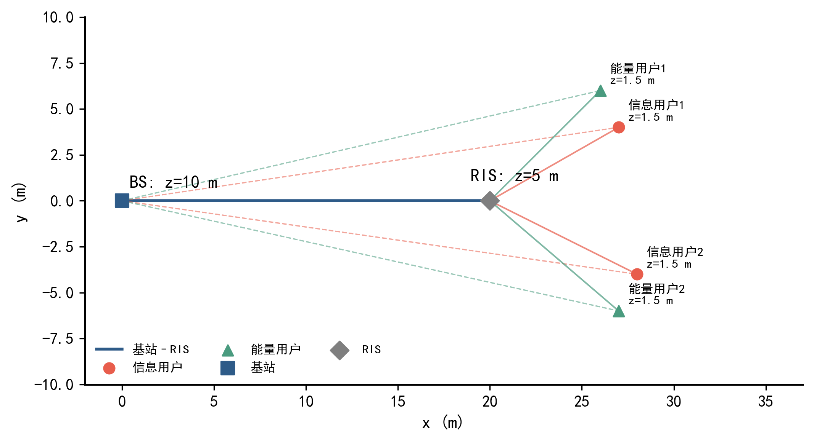
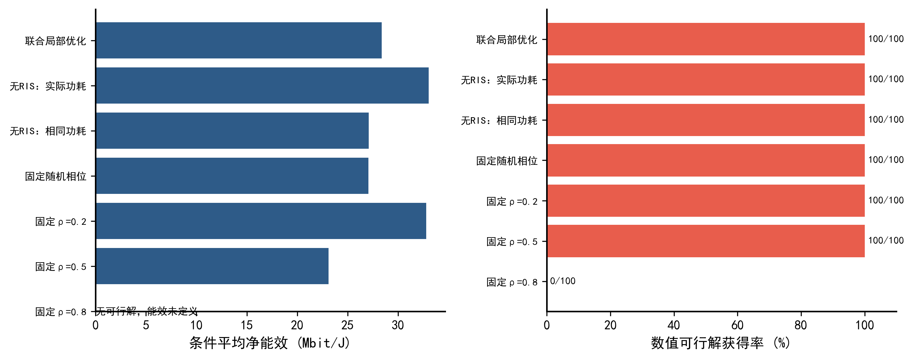
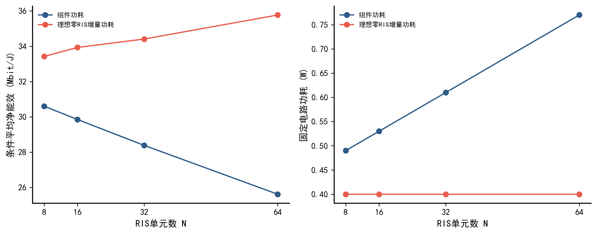
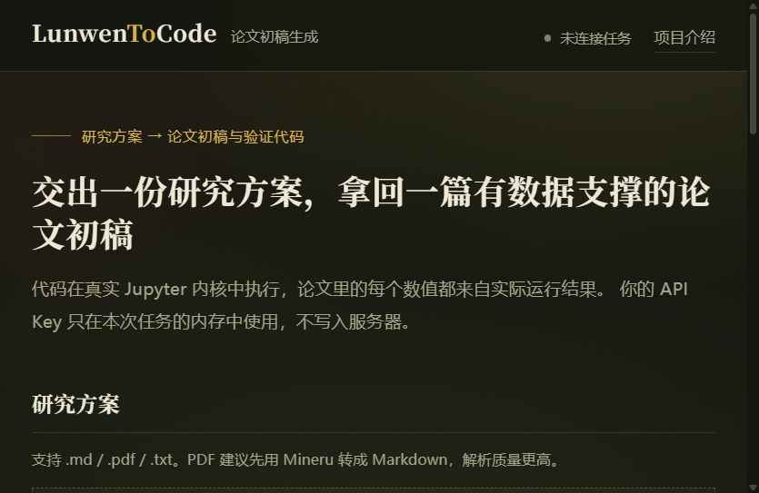

研究方案 → 论文初稿与验证代码
输入 Markdown 或 PDF 研究方案，多 Agent 系统在真实 Jupyter 内核中执行实验， 输出期刊 / 学位论文体例的正文 paper.md，以及每一行都能重跑的 notebook.ipynb。 论文里的每个实验数值，都来自代码的实际输出，而不是模型编造。
生成样张LunwenToCode
可重构智能表面能够调控无线传播环境，为多用户信息与能量协同传输提供支持。 本文研究时隙分割下的 RIS 辅助多用户 MIMO 系统，构建兼顾信息速率、采集能量与净功耗的联合优化模型。 基于 100 个独立信道样本开展配对比较，联合设计较固定随机相位和同电路功耗无 RIS 方案， 平均能效分别提高 1.334 和 1.293 Mbit/J；另对 60 个终点解完成复核，均满足约束容差。
关键词可重构智能表面；多用户 MIMO；无线信息与能量传输；时隙分割；能效优化
第一节
以下数字全部来自一次端到端运行：输入一篇 7,749 字的 RIS 辅助 MIMO-SWIPT 研究方案， 系统自动拆解 8 个支撑任务，在 Jupyter 内核中执行 2,600 个求解实例后写成论文。
图表由代码在内核中直接绘制，论文正文引用的是这些图的源文件；notebook 保存了完整执行轨迹，可逐格重跑。
第二节
代码执行与论文写作交错进行：每完成一个实验任务，写作手立即撰写对应章节， 因此正文里的数字永远追得上代码的输出。
ParserAgent
读取 Markdown 或 PDF 研究方案，提取标题、章节结构与关键词；未提供标题时，自动拟定一个规范的学术标题。
AnalyzerAgent
按论文章节组织 5 至 9 个代码支撑任务，涵盖模型实现、算法求解、仿真实验与图表生成，每个任务对应论文的一章。
CoderAgent
通过 Function Calling 在持久 Jupyter 内核中编写并执行代码，出错自动反思重试，变量跨任务保留，无需重复装载数据。
WriterAgent
以第一作者口吻撰写各章节：模型部分基于方案素材润色，实验数值严格取自代码真实输出，图表强制插入并逐图解读。
第三节
节点部署、基线对比与 RIS 规模消融，均由代码在内核中真实绘制，并原样插入正文。



第四节
整套系统已经部署在服务器上，打开浏览器就能用：上传研究方案、填入自己的 API Key，即可实时看到四个 Agent 的执行进度、日志、论文正文与图表产出。 你的 Key 只在本次任务的内存中使用，不写入服务器。
打开在线运行台
第五节
本站只是展示页。完整的生成系统在你的机器上运行，可以命令行调用，也可以打开浏览器界面看多 Agent 的执行进度。
复制 .env.example 为 .env，填入分析、代码、写作三个模型各自的配置。
命令行传入方案文件，指定输出目录。
上传方案文件，实时查看多 Agent 执行进度与日志。
输出目录里是 paper.md、notebook.ipynb、图表与依赖清单。